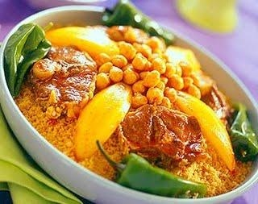

La Cuisine Tunisienne
La cuisine tunisienne est pleine de saveurs. Cette richesse s'explique par les nombreux héritages qu'a reçu la Tunisie, des cultures berbères à andalouse, aux populations arabes en passant par les Italiens, les juifs ou encore les turcs. Aujourd'hui encore, le pays reste marqué par ces différentes traditions et les ingrédients les plus courants de la cuisine tunisienne sont le blé, les olives, la viande, les poissons et les fruits de mer. Les épices et le piment font également partie intégrante de la gastronomie locale.
- 
couscous
-
spaghetti

lablebi

brika
-
ojja

salade
-
tajin
-
riz
voici quelques restaurants que vous pouvez les visiter:
Resto sultan ahmetLe golf